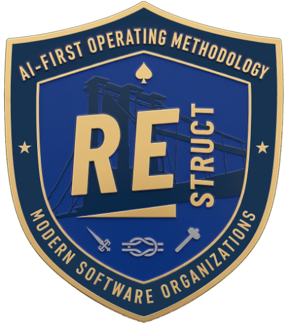
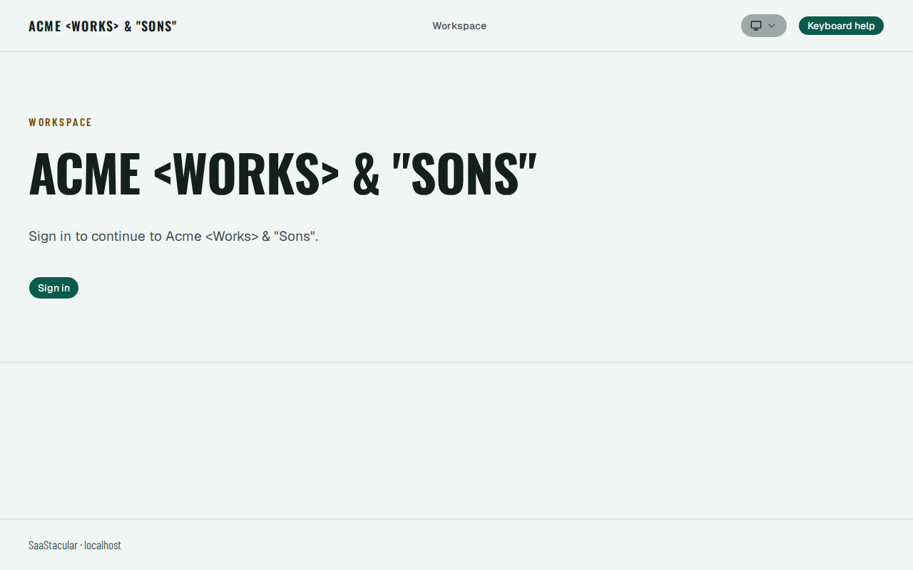
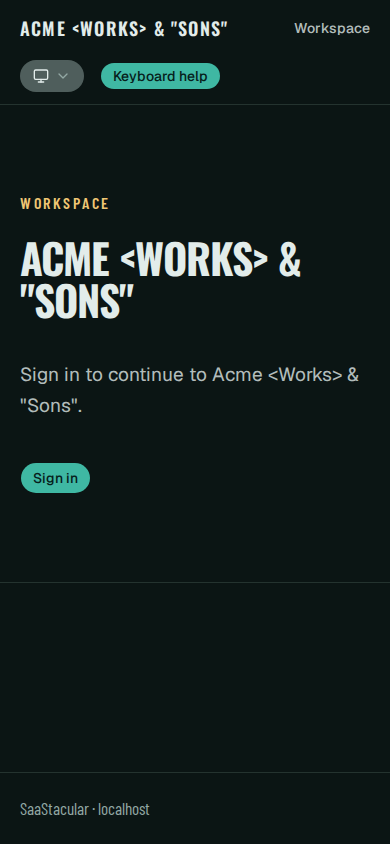
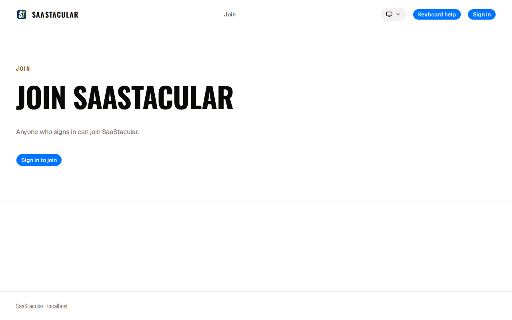
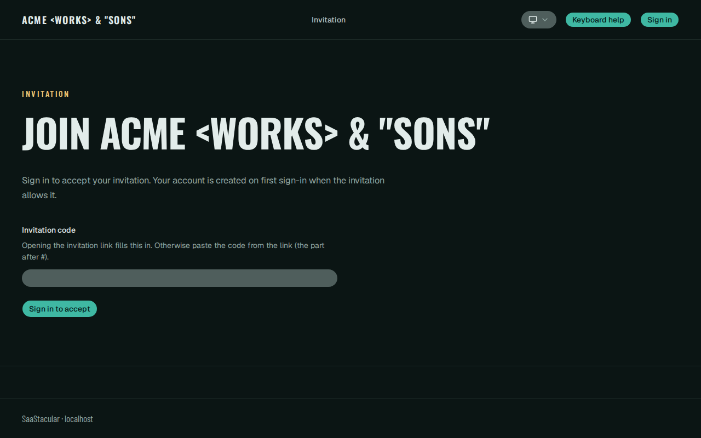
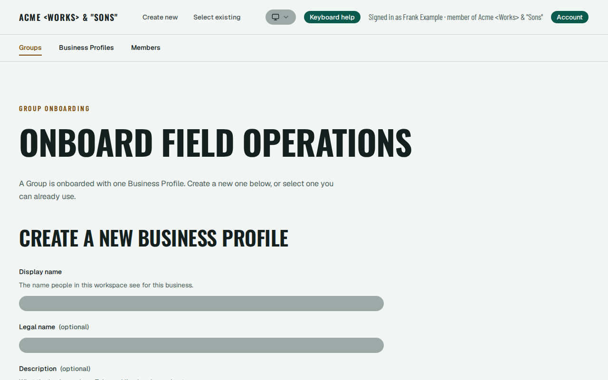
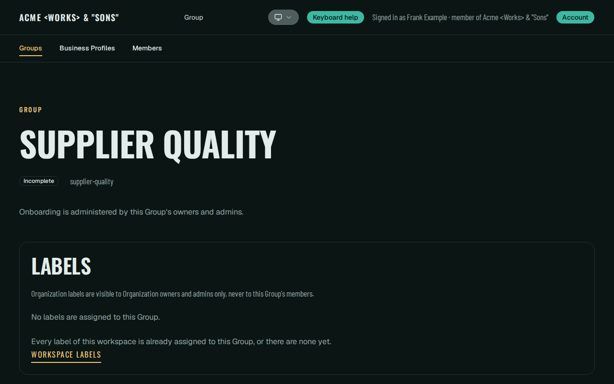
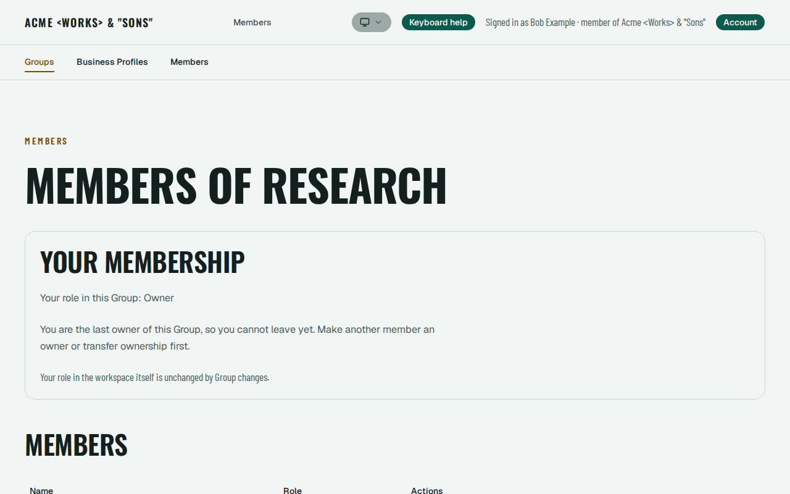
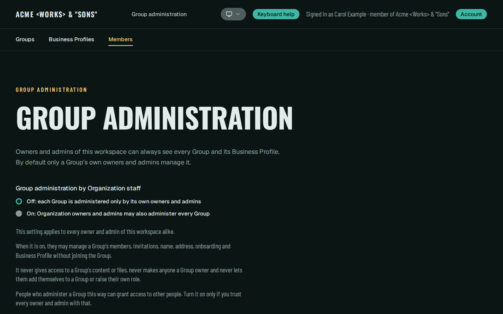

Open source · Apache-2.0
Repository template
A security foundation for building AI operating systems
Multi-tenant by default, with optional single-tenant root routing. A Go core that owns facts, authority, policy and MCP; a Next.js web surface; an optional internal Python intelligence service; PostgreSQL, Redis and S3-compatible storage. Everything runs in Docker.
You configure it and build your product on it. Its value is the reviewed security boundaries it ships and the repeatable checks behind them.
The repository is a GitHub repository template: GitHub copies its files into a new repository of yours.
Live demo. The button opens a prefilled GitHub issue that shows the demo address, https://staging.beginify.net, before you submit it; nothing is sent until you do. Demos are started by hand: Peter replies on the issue with availability, and a session usually lasts about two hours. The demo is not automatic and not always live.
What ships
Security boundaries you start with
Each card summarizes a mechanism described in the public documentation. Security statements are scoped to the tested configuration and the checks the guides name.
-
Tenant boundary with row-level security beneath it
The Organization is the tenant boundary, resolved on the server from the authenticated session and the request host, never from client- or model-supplied identifiers. One RoleBinding store feeds a closed, deny-by-default policy evaluator.
PostgreSQL row-level security sits beneath core's authorization, so an omitted application predicate cannot expose another Organization or an unauthorized Group.
-
Explicit Group authority
Group content requires an explicit Group role. Organization owners and admins see Group metadata only; ordinary Group management by them needs the Organization owner's override, which is off by default, changed only by an owner and audited when changed or used.
The override grants no Group content, no ownership powers and no self-join.
-
Ownership continuity, invitations and enrollment
A database authority guard keeps at least one owner on every Organization and Group, and ordinary admin authority cannot grant ownership to itself.
Invitations are scoped, expire within 30 days, are revocable and are consumed once; delivery e-mail or token possession alone is not authority. New Organizations start invite-only; owners can switch to request-access or open enrollment.
-
Host-bound sessions and revocation
WorkOS AuthKit authenticates people; core owns the sessions. The session credential is an opaque 256-bit value of which only the SHA-256 is stored, with a 30-minute idle and 8-hour absolute lifetime by default.
A browser session is bound to the exact origin and Organization of its sign-in and resolves nowhere else. Signing out everywhere revokes every session of the user.
-
Tenant-scoped object storage and signed URLs
Core derives every object key from the Organization and object identifiers and authorizes each read, upload and delete against the object's recorded scope before any provider call; row-level security enforces the same table independently.
Signed download URLs are GET-only, expire after at most 300 seconds and are never logged. The guide also states what is not proven, and the storage layer is core-internal: no route wires it in yet.
-
Durable audit, guarded recovery and retention
An append-only audit relation records foundation-level changes, security denials and storage outcomes; database triggers capture row changes in the same transaction. The audit record is core-internal, with no HTTP surface or export.
The recovery tool provides a fenced backup, restore into a fresh closed target, session invalidation before reopening, bounded retention maintenance and backup expiry, with a synthetic drill. A successful local drill is not production backup qualification.
Included development workflow
Restruct™ SDLC for agent-driven work
SaaStacular includes Restruct SDLC, a development workflow for working with AI coding agents and human decision-makers. It is pinned as an unaltered submodule at .agents/skills/restruct-sdlc/ and keeps its own MIT license.
- It covers the delivery steps in order: Goal, Spec, Plan, implementation, review and validation, and a Result record, with budgets, parallel scheduling, evidence and cleanup.
- You record who decides and which roles agents play, then adapt or replace those rules. Three child skills cover adopting the workflow, supervising and reviewing, and handing work between local agent sessions.
- It is optional. The application's build, tests, migrations and runtime do not depend on it, installing it starts no agent and creates no records, and the application's CI and local checks do not run Restruct's tests.
SaaStacular honors the Foundation-First rather than Feature-First principle of Restruct™, set out in the handbook chapter SDK-First Development (read the full handbook): the governed foundation (identity, tenancy, authorization, isolation and audit) ships first, and product features are yours to build on it.
Restruct SDLC on GitHub · Development workflow in this repository

Architecture
Two boundaries, drawn from the public docs
Every arrow below comes from the repository's README, SECURITY guide, foundation guides or MCP contract; the source for each is listed under its diagram. They show what the template does today, not a deployment you operate, and the security statements are scoped to the tested configuration.
On a narrow screen, scroll the image sideways or open a file. Image files: SVG · PNG, light · PNG, dark


The same diagram in text
- Browser → web: HTTPS through a TLS edge you provide; plain HTTP on loopback for local use only.
- web → core: server-side requests to an internal URL. web has no authority, policy or domain rules, and no datastore, WorkOS or gateway credentials.
- AI client → core: MCP over a per-connection URL bound to one Organization, one user and one client; each call is reauthorized. It does not pass through web.
- core → PostgreSQL: durable state, through a least-privilege runtime role under forced row-level security.
- core → object storage: S3-compatible API (MinIO locally) with a bucket-scoped user. Core-internal today: no route exposes it yet.
- core → WorkOS AuthKit: HTTPS to the hosted sign-in provider; its API key lives in core only.
- core → Redis: a readiness check only today. Redis is ephemeral.
- core → intelligence (optional): a readiness probe only today. intelligence is not reachable from a browser and has no data-store access.
- intelligence → model gateway (optional): HTTPS to OpenRouter, only when enabled; the key lives in intelligence only.
What has no arrow: in the shipped template the browser, web, AI clients and intelligence do not connect to PostgreSQL, Redis or object storage. Signed download URLs (GET-only, at most 300 seconds) exist in the storage layer, but no route issues them yet.
Where each arrow comes from
- Browser → web, web → core, core → PostgreSQL, Redis, WorkOS, object storage, intelligence, intelligence → gateway: SECURITY §7, transport table.
- web and intelligence boundaries: README, Architecture at a glance; credentials held per service in SECURITY §5, Least privilege.
- AI client → core: MCP guide, How it works.
- core → PostgreSQL: Database isolation, Context. Object storage and signed URLs: Object storage guide. WorkOS: Identity, What is decided where.
On a narrow screen, scroll the image sideways or open a file. Image files: SVG · PNG, light · PNG, dark


The same diagram in text
- Authenticated person: identity is global; WorkOS AuthKit authenticates and core owns the session.
- Resolved on the server: core resolves the Organization from the authenticated session and the request host, never from a client-supplied or model-supplied identifier. An unknown or foreign Organization gets the same denial as no membership.
- Organization, the tenant boundary, contains its roles (
org_owner,org_admin,org_member; no role is global), its Groups (each in exactly one Organization for life;group_owner,group_admin,group_member) and its Business Profiles (owned by one Organization; a Group links to at most one profile of its own Organization; one profile can be shared by several Groups). - Three authority boundaries: (1) Organization owners and admins read Group metadata, never rosters, invitations, tokens or objects; (2) managing a Group needs an explicit Group owner or admin role, or the owner-controlled override, off by default and audited, with no ownership powers and no self-join; (3) Group content needs an explicit Group role, whether the override is on or off.
- Enforced in two layers: the RoleBinding store (the only place a role is written), core's closed deny-by-default policy, and PostgreSQL row-level security beneath it.
What it does not show: a separate database per tenant, a browser reaching the database, or authority taken from names, slugs or model output. The template has none of these.
Where each element comes from
- Server-side Organization resolution, denial, recheck: Authorization, Request scope and TenantContext; README, Architecture at a glance.
- Organization, Group, roles, Business Profile, RoleBinding: Tenancy, Model and Roles and sources.
- The three boundaries and the override: Tenancy, Explicit Group authority.
- Row-level security and its context: Database isolation, Context.
Included test harness
Docker tests that account for what they create
The repository ships its own Docker integration-test and resource-lifecycle harness. infra/ci/validate.sh is the single validation entry point, locally and in CI: it runs a chosen profile with evidence scanning and owned-resource cleanup, and fails closed when the host does not meet that profile's capacity.
- Every Docker allocation of a run with a resource registry is counted by exact ID against a finite, source-derived ceiling. A crossing or a failed Docker query refuses the allocation, creates nothing and holds the scope.
- The migrations suite reuses one long-lived runner container for its eligible Go invocations, checking its identity, processes and file changes before and after each one. Each invocation still gets its own fresh database; other suites keep their own resources.
- Teardown is verified by exact ID. A crash leaves the runner as a registry row for the next launch's recovery gate, and
resources.tsvreports what each scope created and left over. - The affected profile selects only the checks a committed change requires and falls back to the full profile for unregistered paths or an unusable base. A live
N/TOTALcounter tracks required checks as they run.
If you know Testcontainers and its Ryuk reaper, the idea is in that spirit: the harness owns, counts and cleans up its test resources. It is the repository's own shell and Docker tooling, not a dependency, and no compatibility or equivalence is claimed.
Limits. Nothing here claims a time saving or leak-free operation. The runtime added by the accounting has not been measured, and some Docker behaviours it relies on, such as event ordering and a real reboot, have not yet been observed on real Docker. Local runs need Docker Engine 24 or later with BuildKit, Compose 2.24 or later, Bash 4.4 or later, GNU coreutils, findutils and grep, plus git, setsid, ps, timeout and flock.
Batch Docker reuse and resource accounting · Reading progress and failures
Screenshots
The interface, for reference
Captured from the public source running its identity test environment: the pinned WorkOS emulator with seeded synthetic Organizations and users. No real accounts or e-mail appear.








Get started
Four commands from the repository root
You need Docker Engine or Docker Desktop with Compose 2.24 or later, bash with coreutils and flock, and Git for the developer checks. No host Go, Python, Node, PostgreSQL, Redis or MinIO is needed. These are the README's quick-start commands, shown here for reading.
-
Configure
Creates
.envfrom.env.examplewith locally generated secrets. It never overwrites an existing.env.infra/local/configure-env.sh -
Start
The first start downloads images and compiles MinIO from source, which takes several minutes.
docker compose --env-file .env -f infra/compose/local.yml up -d --build --wait -
Migrate
Runs as the migrator role in a one-shot container.
docker compose --env-file .env -f infra/compose/local.yml -f infra/compose/migrate.yml run --rm --build migrate status docker compose --env-file .env -f infra/compose/local.yml -f infra/compose/migrate.yml run --rm --build migrate up docker compose --env-file .env -f infra/compose/local.yml -f infra/compose/migrate.yml run --rm --build migrate status -
Check
Formatting, vet, unit tests, lint, type checks and secret scanning, all in containers without network access.
docker compose --env-file .env -f infra/compose/local.yml --profile checks run --rm --build core-check docker compose --env-file .env -f infra/compose/local.yml --profile checks run --rm --build web-check docker compose --env-file .env -f infra/compose/local.yml --profile checks run --rm --build intelligence-check bash infra/security/secret-scan.sh --env-file .env secret-scan
Full quick start in the README · Getting started guide · Security controls